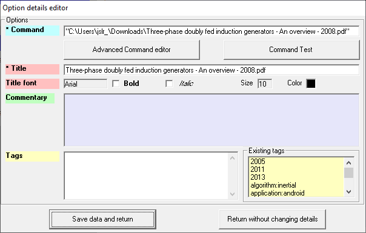
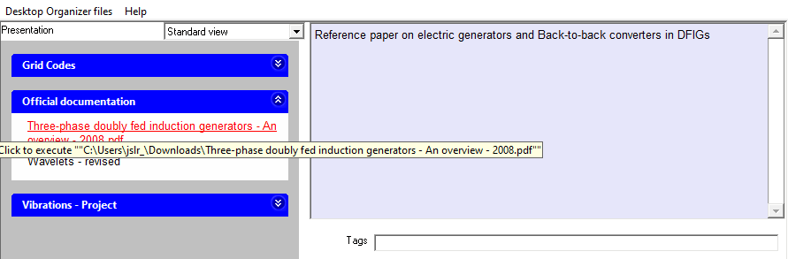

Add an Option to a Group by the "Drag and Drop" method.
- Using Windows Explorer, or any other program that allows you to explore the disk system, select the document to create the Option.
Click on it with the left mouse button and, without leaving the button pressed, move the mouse over the Group where you want to create the Option, and then "release it" (stop pressing the mouse button).
The following form will appear, partially filled in with data from the chosen file.

The Title and the Command textboxes must be filled in. You may change both textboxes: if the Title textbox content coincides with the title of any existing Option in the selected Group, then its background turns to yellow.
The Command textbox must be:
- the location of a document in the file system.
- a valid URL.
- the location of an application (executable file), followed by a set of parameters, separated by blanks.
The Comment can be modified by placing the mouse on the text box (blue background) associated with Comment, and pressing the right button: the following form will appear, where you must enter the text of the desired comment.

Press the "Continue" button (or "Cancel" to keep the existing the Comment).
- Pressing the Save data and return button, although previously the program will ask you to check if the command is correct, for which you must press the Command Test button, and make sure that the associated document/URL/application appears correctly.
